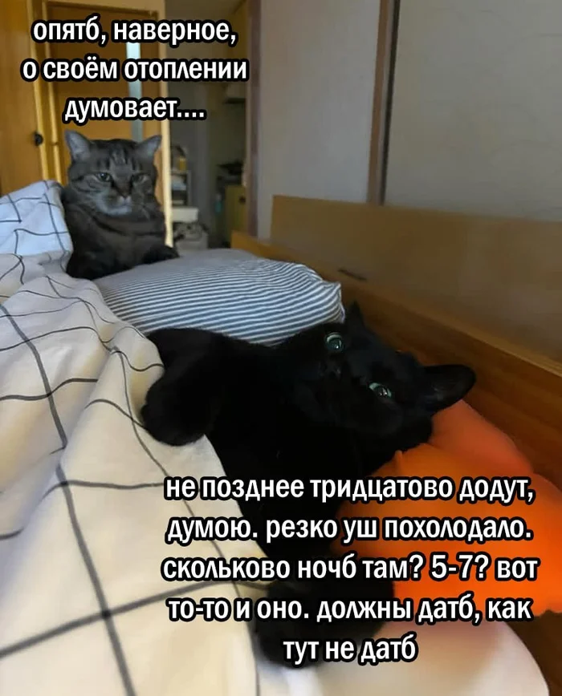
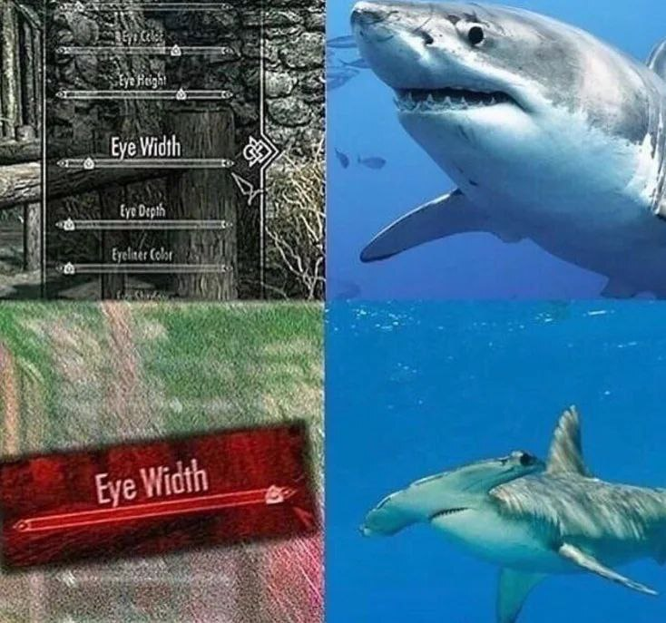

Сделанные мною практички
Моя первая попытка в Linux
Мдааа, что тут еще сказать
Попытка решить проблему с отоплением (не очень удачная)
Ммм, может, это так уж и плохо
Исследование того, как можно моздать акулу-молот
Разрывная?
Мдааа, что тут еще сказать
Ммм, может, это так уж и плохо
Разрывная?